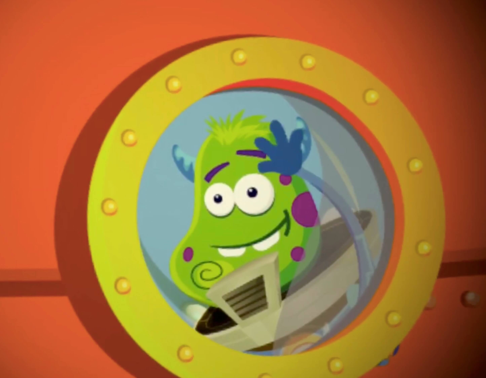
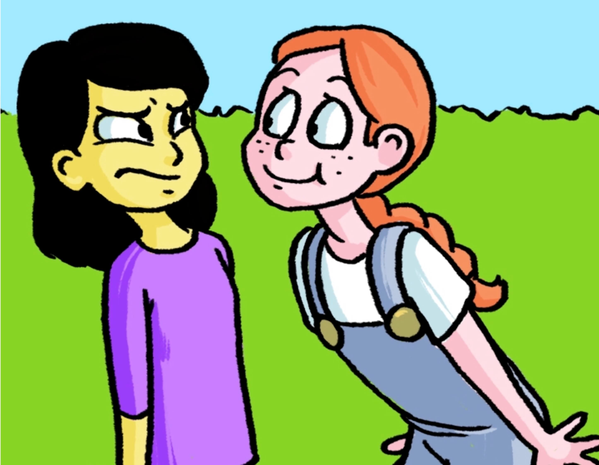

Socially Savvy Apps
Socially Savvy Apps finds iPad apps that teach social skills to children and teenagers on the autism spectrum.
These apps include social stories, social games and even practice with discrete skills such as face expression recognition.
Research suggests that children and teenagers on the autism spectrum can be highly motivated by interventions delivered with an iPad.
If you have a child or teenager on the autism spectrum, and you struggle to keep them motivated while explaining social rules and behaviours to them, you could consider iPad apps as a learning support.
Socially Savvy Apps brings all these apps to one place, so that you can easily find the right ones for your child or teenager.
In The Social Express II, Emma, Zack and their friends embark on a search for the “hidden social keys”. The player follows the children through social scenarios of varied complexity, and gets to choose how the children behave in these situations. “Video modelling on steroids”, as its developers call it, The Social Express II is beautifully animated and covers a wide array of social scenarios. The players can see each social scenario in three ways: either as an interactive video, with the player’s choices affecting the outcome, as a normal video which features only the correct choices, and in book form.

10 Ways - A Social Skills Game is a Jeopardy-style app that helps children improve their social skills. Under the coaching of an adult, children compete against one another by answering questions and completing tasks related to social situations and social communication. Despite its competitive format, 10 Ways strongly encourages cooperation and group work. There are direct prompts, in the form of questions that require the child to get help from another player. The most notable feature of this app is the open-ended nature of most questions, and their potential to spark debates between participating children and adults.

By using the story of Kloog, an extraterrestrial that finds himself stranded on Earth, Social Skills for Autism teaches social rules to children and adolescents on the spectrum. Rather than listing social rules, Social Skills for Autism also takes the time to explain why certain behaviours are more appropriate than others. The player helps Kloog learn social rules via “missions”, each targeting a social skill domain: non-verbal communication, conversation skills and what the developers call “think before you talk”, containing lessons on how to disagree in a nice way, what honesty means, and also why social rules are important. Kloog's adventures continue in Return to Zugopolis

Let’s Be Social contains 20 short social stories, spanning six sets of social skills: personal interactions, navigating the community, school behaviour, handling change and social relationships. After reading or being read each story, the user is prompted to answer a series of questions. These questions test the user’s understanding of the terms used in the social story, and of the appropriateness of the behaviours and emotions depicted in it. After answering all the questions, the user is told the story again, and is rewarded with golden stars.

Return to Zugopolis is the sequel of Social Skills for Autism, continuing the story of Kloog, an alien learning social skills. This time, Kloog recruits the help of his new human friends to teach social skills to the other aliens in his planetary system. Children learn social skills applicable to both real life and online environments: how to tell if someone is a friend, how to develop and maintain friendships, and how to stay safe from bullies. The lessons are brought to life by gorgeous animations and explanations delivered by Kloog himself. After each lesson, the child gets a quiz testing their newly-gained knowledge. Notably, Return to Zugopolis provides children with concrete, actionable steps they can employ in diverse social situations.
About Face Emotion Recognition is developed by psychologists at the University of Bristol. It uses realistic computer-generated faces to illustrate the emotions of happiness, sadness, disgust, fear, anger and surprise. Children practice emotion recognition with five activities: recognizing an emotion from one face, recognizing different emotions from two faces, tapping the emotion that corresponds to one face, and matching two faces that express the same emotion, either by choosing between two options, or as part of a memory game. You can manipulate a wide variety of features, from what and how many emotions and faces are shown, to background colour and sounds. What particularly stands out is the possibility of fine-tuning the subtleness (or obviousness) of the face expressions.